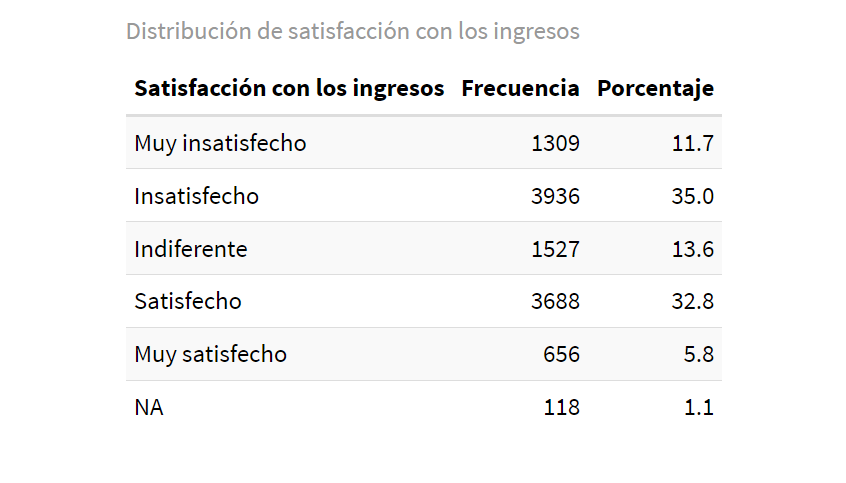
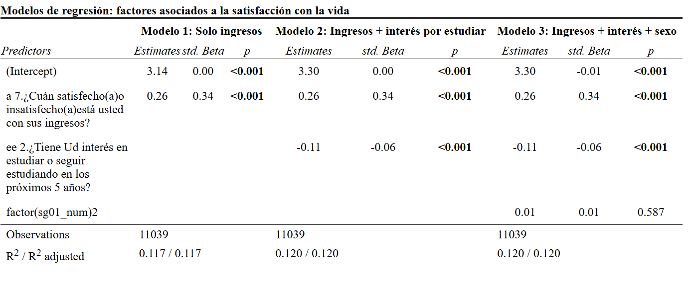

Género y bienestar subjetivo en Chile: un análisis exploratorio sobre satisfacción vital, percepción económica y aspiraciones educativas
Género y Bienestar subjetivo
La noción de bienestar subjetivo ha ganado relevancia como una herramienta para diagnosticar desigualdades no solo materiales, sino también simbólicas, emocionales y proyectivas. Este trabajo se sitúa en esa línea y busca explorar cómo el bienestar subjetivo se expresa de manera diferenciada entre hombres y mujeres en Chile, utilizando como fuente de datos la Encuesta de Bienestar Social 2023.
Diversos estudios han señalado que, aunque las mujeres suelen tener peores indicadores objetivos de salud y economía, tienden a reportar niveles más altos de satisfacción subjetiva en ciertos dominios, especialmente en etapas más avanzadas del ciclo vital (Gallardo-Peralta et al. 2018). Esta aparente paradoja evidencia que el bienestar no puede entenderse solo en función de lo material, sino también desde las relaciones, expectativas y significados que las personas otorgan a su experiencia.
Asimismo, las brechas salariales siguen siendo una expresión concreta de la desigualdad estructural de género. A pesar de los avances normativos, persiste una marcada desigualdad en los ingresos percibidos por hombres y mujeres por trabajos equivalentes, lo cual incide directamente en su percepción de suficiencia económica y bienestar (Rivero Evia 2024).
En cuanto a las aspiraciones educativas, investigaciones sobre mujeres en carreras tradicionalmente masculinizadas, como la ingeniería, han mostrado que las motivaciones para continuar estudiando suelen vincularse con la necesidad de superar barreras estructurales y culturales, así como con la búsqueda de movilidad social y autonomía personal (Jiménez, Jones, and Vidal 2019) Este tipo de interés proyectivo puede ser interpretado como una forma de agencia frente a contextos marcados por la desigualdad de oportunidades.
Concepto central
El concepto central que se abordará es bienestar subjetivo, entendido como el conjunto de percepciones que una persona tiene respecto a su situación vital, emocional y económica, incluyendo su satisfacción con la vida, su percepción de suficiencia material y su proyección en términos de formación futura. Este enfoque integra tanto dimensiones cognitivas como afectivas, permitiendo una lectura compleja de las desigualdades sociales.
Hipotesis
Las mujeres presentan menores niveles de satisfacción con la vida e ingresos, pero mayor interés por continuar estudios, en comparación con los hombres.
Datos
Este estudio adopta un enfoque cuantitativo de tipo exploratorio, con un diseño transversal basado en el análisis secundario de datos provenientes de la Encuesta de Bienestar Social 2023, desarrollada por el Estado de Chile. La unidad de análisis corresponde a personas mayores de 18 años encuestadas en el instrumento, en tanto sujetos capaces de expresar percepciones sobre su bienestar y sus expectativas educativas.
El objetivo no es establecer relaciones causales, sino identificar patrones de diferenciación por sexo en variables asociadas al bienestar subjetivo. Se utiliza el software RStudio para el procesamiento, recodificación y análisis de los datos.
Variables seleccionadas
- Variable independiente principal:
Sexo (sg01) –> Categorica nominal
Categorías: 1 = Hombre; 2 = Mujer
Dicha variable permite segmentar la muestra para comparar los niveles de bienestar subjetivo y proyección educativa.
- Variables dependientes:
Satisfacción con la vida (a1)
Tipo: ordinal
Categorías: 1 = Muy insatisfecho(a), 2 = Insatisfecho(a), 3 = Indiferente, 4 = Satisfecho(a), 5 = Muy satisfecho(a)
Representa la percepción global que las personas tienen sobre su calidad de vida.
Satisfacción con los ingresos (a7)
Tipo: ordinal
Categorías: 1 = Muy insatisfecho(a), 2 = Insatisfecho(a), 3 = Indiferente, 4 = Satisfecho(a), 5 = Muy satisfecho(a)
Esta variable se asocia a la percepción de suficiencia económica, más allá del ingreso real.
Interés por continuar estudios (ee2)
Tipo: categórica dicotómica
Categorías: 1 = Sí, 2 = No
Mide el deseo expresado por los encuestados de continuar su formación en los próximos cinco años, lo cual se interpreta como una forma de agencia proyectiva y búsqueda de movilidad.
Principales resultados
Satisfacción con los ingresos según sexo


Los niveles de insatisfacción con los ingresos son altos: el 35% se declara “insatisfecho” y un 11,7% “muy insatisfecho”. En el gráfico se aprecia que las mujeres declaran insatisfacción con mayor frecuencia que los hombres, y también tienen una menor proporción en la categoría “muy satisfecha”. Esto sugiere una mayor percepción de precariedad económica entre las mujeres, lo cual se alinea con la literatura sobre desigualdad salarial de género.
Matriz de correlaciones

Correlación entre satisfacción con la vida y satisfacción con los ingresos
Valor: 0.34
Interpretación: Existe una correlación positiva moderada, lo que indica que a mayor satisfacción con los ingresos, suele haber también mayor satisfacción con la vida.Correlación entre satisfacción con la vida e interés por seguir estudiando
Valor: -0.06
Interpretación: Hay una correlación ligeramente negativa pero muy débil, lo que sugiere que quienes están más satisfechos con su vida podrían tener un poco menos de interés por seguir estudiando, aunque esta relación es prácticamente inexistente desde el punto de vista estadístico.Correlación entre satisfacción con los ingresos e interés por estudiar
Valor: 0.00
Interpretación: No existe una relación significativa entre estas dos variables, lo que implica que la satisfacción con el ingreso actual no se relaciona con la motivación o deseo de continuar estudiando.Tabla de regresiones

En la tabla se presentan tres modelos de regresión lineal estimados con el objetivo de identificar los factores que inciden en la satisfacción con la vida de las personas. La variable dependiente en los tres modelos es a1_num, que mide la satisfacción general con la vida en una escala de 1 (muy insatisfecho) a 5 (muy satisfecho). Cada modelo incorpora progresivamente nuevas variables explicativas.
Respecto al modelo 1, el predictor es a7_num (satisfacción con los ingresos), su coeficiente es 0.26 y la significación es p < 0.001.
A modo de interpretación se puede decir que existe una asociación positiva significativa entre satisfacción con los ingresos y satisfacción con la vida. Por cada punto que aumenta la satisfacción con los ingresos, la satisfacción con la vida aumenta en promedio 0.26 puntos.
El R² es igual a 0.117, lo cual indica que el modelo explica un 11.7% de la varianza en la satisfacción con la vida.
Por otro lado, respecto al modelo 2, el primer predictor es a7_num y su coeficiente se mantiene igual (0.26), al igual que la significación (p < 0.001). El segundo predictor es ee2_num, su coeficiente es -0.11 y la significación es p < 0.001.
A modo de interpretación, se puede decir que a igualdad de ingresos, quienes no desean seguir estudiando reportan una ligeramente mayor satisfacción con la vida, lo que puede relacionarse con menos presión académica o expectativas frustradas.
El R² es igual a 0.120. Lo anterior quiere decir que aumenta apenas la capacidad explicativa del modelo respecto al anterior.
Por último, respecto al modelo 3, los predictores se mantienen igual, solo se le agrega un nuevo predictor que es factor(sg01_num)2. El coeficiente es 0.01 y el valor p es igual a 0.587, el cual no es significativo.
A modo de interpretación, se puede decir que el sexo no tiene un efecto estadísticamente significativo sobre la satisfacción con la vida cuando se controla por ingresos o el interés por seguir estudiando. Al igual que en el modelo 2, el R² es igual a 0.120.
Reflexión final
A partir de la hipótesis central planteada al comienzo de este trabajo:
“Las mujeres presentan menores niveles de satisfacción con la vida e ingresos, pero mayor interés por continuar estudios, en comparación con los hombres”,
se puede concluir que los modelos estimados no respaldan completamente dicha hipótesis. La satisfacción con los ingresos muestra un efecto significativo y positivo en todos los modelos, lo que indica que es un factor determinante del bienestar subjetivo. El interés por continuar estudios también tiene un efecto significativo, pero negativo: quienes no desean seguir estudiando reportan mayor satisfacción con la vida. Por otro lado, el sexo no tiene un efecto estadísticamente significativo, lo que implica que no aporta capacidad explicativa adicional al modelo cuando se consideran las otras variables.
A modo de conclusión, los resultados del análisis de regresión permiten confirmar que la satisfacción con los ingresos es un determinante sólido del bienestar subjetivo. El interés por estudiar también influye, pero de forma inversa a lo esperado, y el sexo no tiene impacto significativo. Esto sugiere que, más allá de características sociodemográficas, las percepciones de logro económico y aspiraciones educativas juegan un rol más relevante en la valoración que las personas hacen de su vida.